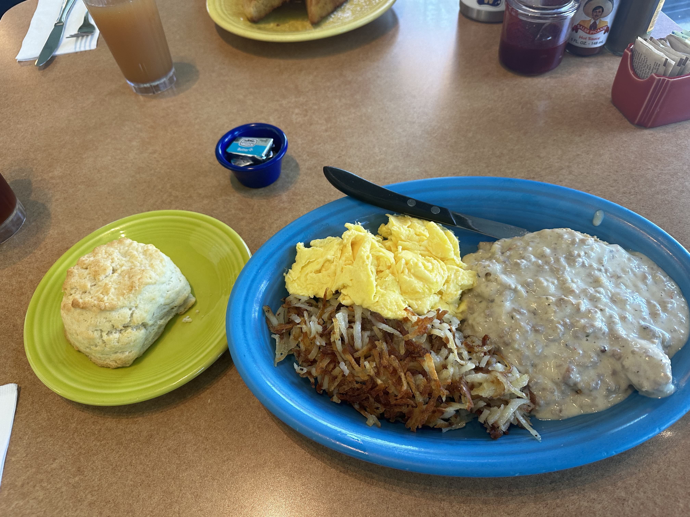

Latest Eat

Geraldine's Counter Restaurant
Columbia City, Seattle
Date: 10 July 2024
Rating: 4 / 5
In typical foodie fashion, I went out to brunch the other day to a little Mom and Pop shop in the Columbia City district of Seattle. The interior was pleasant and the food was amazing. I had possibly the best biscuit I have ever had in my life. I enjoyed the chicken fried streak with a side biscuit and iced tea while my companion had their french toast with red plums, which changes daily.